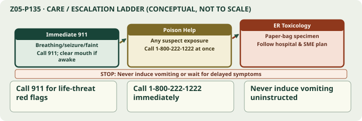

Z05-P135 · Wild foods and poisonous lookalikes · New manuscript
Poison Exposure Recognition and Emergency Referral (1-800-222-1222 / 911)
Provide clear, fail-closed layperson action steps and immediate escalation for suspected plant, berry, root, or mushroom poisoning.
When it applies · All suspected toxic ingestions, pediatric mouthing incidents, or severe plant-smoke/dermal exposures.
Equipment · Phone, Poison Help 1-800-222-1222, 911, clean water for gentle mouth/skin rinse if awake.

Actions
- Call 911 immediately if the exposed person has difficulty breathing, airway swelling, seizures, fainting, confusion, blue lips, or collapse—and remove any remaining plant pieces gently from the mouth if awake.[B09, M01, M14]
- Call Minnesota Poison Control / Poison Help (1-800-222-1222, free, confidential, 24/7) immediately for ANY suspected wild mushroom, berry, root, or toxic plant ingestion or child exposure—do NOT wait for symptoms to appear.[B09, B10]
- Never induce vomiting, give activated charcoal, or administer home remedies unless explicitly instructed by Poison Control or EMS; for skin/eye sap exposure, flush gently with cool water and follow Poison Control advice.[B09, B12]
Failure recognition · Inducing vomiting or waiting overnight after a child eats unknown berries or wild mushrooms worsens aspiration injury and delays life-saving antidotes/supportive care.[B09, B10]
Verify · 911 or 1-800-222-1222 is contacted immediately, exact ingestion time/amount/specimens are reported, and no uninstructed emetics are given.[B09]
Stop or change course · Stop all field activity and prioritize immediate emergency medical care whenever toxic plant or fungal exposure is suspected.[B09]
Evidence and editorial notes
- B09 · Minnesota Poison Control System · Poison Help 1-800-222-1222 and Regional Plant/Mushroom Guidance (Current web edition)
- Section: Minnesota Poison Control 1-800-222-1222 immediate referral · Conditions: Any suspected toxic plant, berry, root, or mushroom ingestion or severe dermal exposure
Support: Call 1-800-222-1222 immediately (or 911 for breathing difficulty, collapse, seizures, or altered alertness); do not wait for delayed symptoms.
Limitations: Never induce vomiting or administer home remedies unless explicitly instructed by Poison Control or EMS. · Conflicting evidence: None noted.
Editorial note: Mandatory Z05 poison-response escalation. · Specialist reviewer: Clinical toxicologist / Poison Center
Primary source · checked 2026-11-25 - B10 · National Capital Poison Center · Poisonous Plants and Berries Overview (Current web edition)
- Section: Poisonous plants, berries, and dose-dependent pediatric risk · Conditions: Household, trailside, and wild berries, seeds, and foliage
Support: Many attractive wild berries, seeds, and roots contain cardiac glycosides, alkaloids, or oxalates that cause rapid toxicity, especially in children.
Limitations: Never sample unknown plants; recognition and consumption suitability remain separate decisions. · Conflicting evidence: None noted.
Editorial note: Separates recognition from consumption. · Specialist reviewer: Clinical toxicologist and botanist
Primary source · checked 2026-11-25 - B12 · NIOSH / CDC · Poisonous Plants: Hemlock, Dermatitis, and Field Hazards (Current web edition)
- Section: Toxic plant dermatitis and hemlock contact/ingestion hazards · Conditions: Field work around poison ivy, poison sumac, wild parsnip, and hemlocks
Support: Urushiol oils in Toxicodendron species cause severe allergic contact dermatitis; burning vines aerosolizes toxic smoke that damages lungs.
Limitations: Never burn unknown vines or brush piles; wash exposed skin promptly with cool water and soap. · Conflicting evidence: None noted.
Editorial note: Covers Z05 contact/inhalation plant hazards. · Specialist reviewer: Occupational health and botanist
Primary source · checked 2026-11-25 - M01 · American College of Surgeons · STOP THE BLEED Training Course (current web edition)
- Section: Ensure Your Own Safety; Find Life-Threatening Bleeding; Compress · Conditions: Lay responder encountering severe external hemorrhage
Support: Ensure scene safety first, call 911, expose the wound to locate life-threatening bleeding, and apply firm continuous direct pressure with clean gauze or cloth.
Limitations: Does not replace formal hands-on Stop the Bleed training or EMS trauma care. · Conflicting evidence: None across ACS/ARC guidelines.
Editorial note: Separates life-threatening arterial/venous hemorrhage from minor scrapes. · Specialist reviewer: Wilderness medicine and trauma EMS
Primary source · checked 2026-11-24 - M14 · CDC · What to Do After a Tick Bite (2026)
- Section: How to remove a tick; Symptoms after a tick bite · Conditions: Attached tick on a person in U.S. settings
Support: Remove promptly with clean fine-tipped tweezers close to the skin and steady upward pressure. Clean the site and obtain evaluation for rash or fever in subsequent weeks.
Limitations: No image determines species, prophylaxis or ruling out illness. · Conflicting evidence: See A02 claim audit for boundaries.
Editorial note: Core Upper Midwest vector-borne disease prevention card evidence. · Specialist reviewer: Infectious disease and regional public health
Primary source · checked 2026-11-25
Source lineage · New manuscript (Z05 P19-C emergency referral) · Classification · New manuscript.